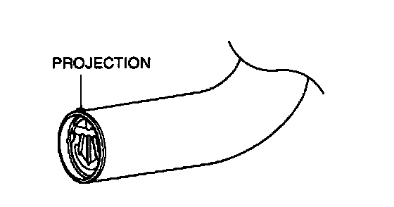
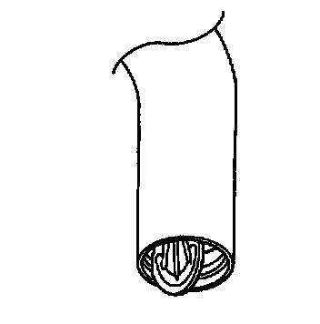

Fuel Tank One Way Valve: Testing and Inspection
1. Remove the fuel-filler pipe.
2. Verify that the projection on the nonreturn valve is aligned with the notch on the fuel-filler pipe.
3. If not, remove the nonreturn valve and align the projection with the notch, then reinstall.
4. Verify that the nonreturn valve is closed when the fuel-filler pipe end is held up vertically.
5. If it opens, replace the nonreturn valve.

6. Verify that the nonreturn valve opens under its own weight when the fuel-filler pipe end is held down vertically.
7. If it does not open, replace the non return valve.